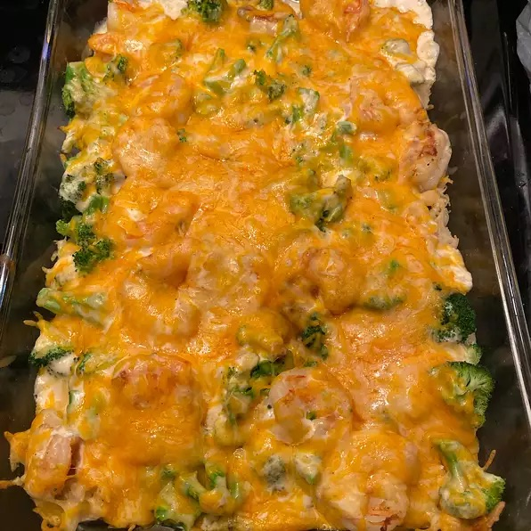

Baked Shrimp & Broccoli Alfredo

This recipe gives Alfredo a seafood twist with all the simplicity of a quick casserole!
Ingredients
- 1 (8 ounce) package angel hair pasta
- 1 serving cooking spray
- 1 pound raw peeled and deveined shrimp, slightly thawed if frozen
- 2 cups chopped broccoli
- 1 ½ cups Alfredo sauce
- ½ cup grated Parmesan cheese
- Bring a large pot of lightly salted water to a boil. Cook angel hair in the boiling water, stirring occasionally, until tender yet firm to the bite, 4 to 5 minutes. Drain.
- Preheat oven to 350 degrees F (175 degrees C). Grease a 2-quart casserole dish with cooking spray.
- Cook and stir shrimp in a skillet over medium heat until slightly pink, 3 to 5 minutes. Add broccoli; cover skillet and let broccoli steam, about 5 minutes. Remove from heat.
- Spread angel hair pasta over the bottom of the prepared baking dish. Top with shrimp and broccoli. Pour Alfredo sauce over shrimp and broccoli; cover sauce with Parmesan cheese.
- Bake in the preheated oven until cheese is slightly browned, about 20 minutes.
Homepage